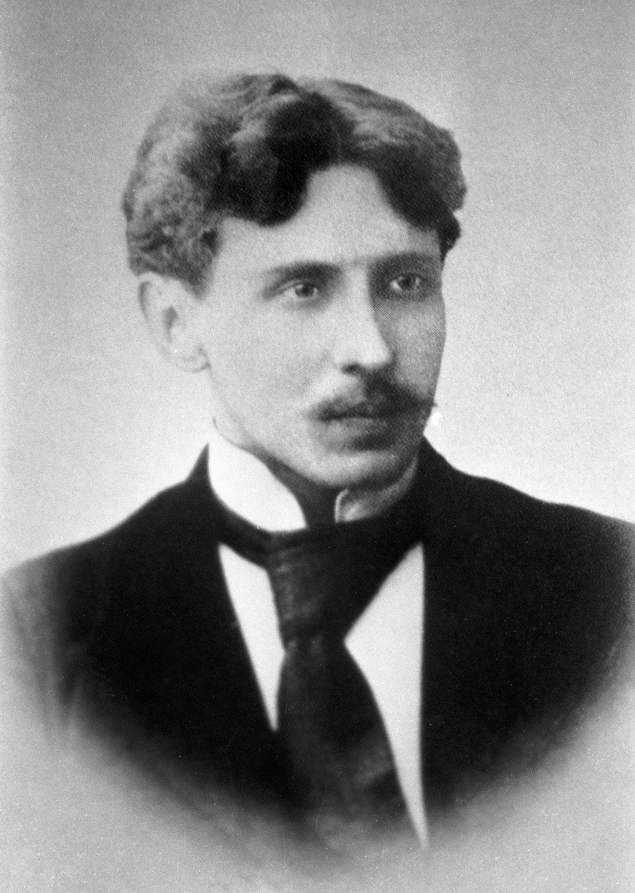

Gimimo data: 1875-09-22
Mirties data: Kompozitorius ir dailininkas
Regionas: simbolizmo pradininkas Lietuvoje.
Žanras: nan
Trumpa biografija
nan
Kūriniai
- Jūra
- Sonata
Nuotraukos

Gimimo data: 1875-09-22
Mirties data: Kompozitorius ir dailininkas
Regionas: simbolizmo pradininkas Lietuvoje.
Žanras: nan
nan